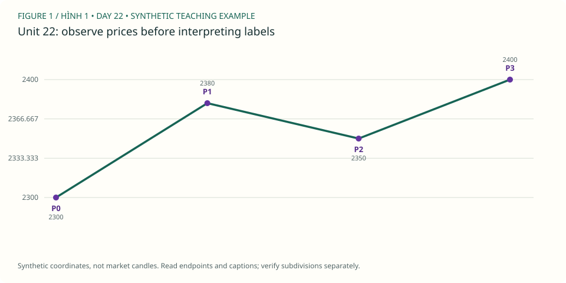

PDF CURRICULUM · UNIT 22 / 30
RSI divergence / Supporting evidence only
so sánh momentum ở pivot tương ứng, không lấy divergence làm lệnh.
← Roadmap · Unit trước · Unit tiếp
1. Học và ví dụ theo unit / Study
- Đọc: PDF 71–76, Gold trang73.
- Mục tiêu: so sánh momentum ở pivot tương ứng, không lấy divergence làm lệnh.
- Nguyên lý: price vs oscillator; timestamp alignment; xác định settings; divergence có thể kéo dài.
- Ví dụ mới: giá2380→2400 trong khi RSI72→64: bearish divergence candidate, không tự là wave5.
- Bài tập: giá tạo lower low, RSI higher low gọi gì? Thiếu divergence có hủy impulse không?
- XAUUSD: 3 so sánh bằng RSI(14), Wilder, close trong MT5; ghi settings, warm-up và timestamps. Lab hiện có chưa hiển thị RSI.
- Nộp/đạt: 3 price/RSI pairs, một ca không divergence và không suy diễn reversal.
Đọc hình gốc & trả lời trên chart / Source-chart lesson
Gold Daily: price và RSI divergence · Steve Sinclair, Elliott Waves Made Simple, Image 54, PDF p.73. Mở trang gốc / Original page
- Quan sát / Observe: Giá tạo lower low trong khi RSI ở cùng giai đoạn tạo higher low. / Price makes a lower low while RSI makes a higher low.
- Suy luận / Reason: So hai cặp extrema theo cùng thời gian; oscillator và giá dùng hai trục riêng. / Align the comparisons in time, not by vertical pixel distance.
- Giới hạn / Limit: Không suy ra RSI period của hình từ nét vẽ. Lab bên dưới ghi rõ RSI14 Wilder; divergence không xác nhận count. / Book settings are not inferred.
Ảnh trích từ PDF bạn cung cấp, giữ nhãn gốc để học cách đọc; không phải dữ liệu MT5 của lab. Bấm vào điểm giá/đỉnh/đáy được hỏi (không bấm chữ nhãn), rồi “Kiểm tra”. Mỗi câu có hình riêng để lưu hai điểm độc lập. / Click the requested endpoint, not the label text; each question has its own saved point.
Câu hình 1 / Image question 1
Bấm lower low thứ hai trên panel giá. / Locate the second, lower price low.
Chưa chọn điểm / No point selected.
Câu hình 2 / Image question 2
Bấm higher low thứ hai tương ứng trên RSI. / Locate the corresponding second RSI low.
Chưa chọn điểm / No point selected.
Chấm tọa độ trong vùng dung sai quanh endpoint được hỏi, không tự xác nhận cấu trúc Elliott hay hiệu quả giao dịch. Dùng trường X/Y nếu không thao tác chuột; gốc tọa độ ở góc trên trái. Lưu trả lời hoặc export để giữ điểm, lời giải và nguồn hình.
Sơ đồ giả định bổ sung / Additional synthetic sketch

Sơ đồ giá giả định: đọc cùng ví dụ của bài. P là điểm quan sát, không là số sóng Elliott. Không mô tả RSI, contract size hoặc kết quả giao dịch từ đường giá này.
Quy tắc, guideline và lưu ý nguồn · Cách làm và rubric bài vẽ
2. Trắc nghiệm / Multiple-choice practice
6 câu chọn đáp án, có giải thích sau khi chấm; 4 nhiệm vụ tự luận/vẽ bên dưới. Đây là luyện tập offline, không phải bài thi chống xem đáp án.
Chưa chấm / Not graded.
3. Bài vẽ của unit 22 / Draw here
Nhiệm vụ: 3 so sánh bằng RSI(14), Wilder, close trong MT5; ghi settings, warm-up và timestamps. Lab hiện có chưa hiển thị RSI.
Giải thích cần nộp: giá tạo lower low, RSI higher low gọi gì? Thiếu divergence có hủy impulse không?
Starter window: XAUUSDm H4, 2024-10-01 00:00:00 → 2024-10-22 08:00:00. Ban đầu 48/96 nến. Cửa sổ có thể không chứa pattern yêu cầu; ghi no-count và dùng lịch sử rộng hơn, không ép nhãn để đạt quota.
data/Mt5Data/XAUUSDm_H4_202101030000_202609250000.csv · server-time offset unknown · không resample. Từng unit có nguồn/window identity riêng.
RSI(14) Wilder — close
RSI dùng 200 nến trước cửa sổ để warm-up; chỉ hiển thị giá trị đến nến đang thấy. So sánh cùng timestamp; divergence không chứng nhận count.
Chọn wick bắt đầu (low cho nhịp tăng, high cho giảm), rồi bấm lần lượt trên chart hoặc chọn nến và “Thêm điểm”. Tắt tự chuyển nhãn khi vẽ W–X–Y, nhiều degree hoặc swing riêng. Giá neo đúng wick thật, không kéo đến giá tùy ý.
Giới hạn: diagonal, complex/running/expanding triangle và policy giao dịch cần nhận xét thủ công; dùng swings thay vì ép chúng qua checker impulse. Mode triangle chỉ kiểm tra nhãn/thứ tự và các chân quan sát, không chứng nhận hình học, biến thể hay internals. Chưa biết executable bid/ask, timezone offset hoặc broker specs. OHLC không chứng minh fill hay lợi nhuận.
Daily / H4 / H1 cùng mốc quan sát
Đo các điểm đã chọn / Measure anchors
2 điểm: retracement; 3 điểm: projection; 6 điểm: độ dài 1/3/5. Không dùng kết quả đo để cứu count sai.
Gửi JSON và SVG vào chat để được nhận xét. Không tự upload. JSON gồm đúng nến đang thấy, endpoints, journal và câu trả lời; giữ bản gốc trước khi sửa.
OHLC và các nhãn đã vẽ
| Timestamp | Open | High | Low | Close | Labels |
|---|
Ví dụ pivot quan sát — không phải đáp án bài vẽ
Các P-pivot và candidate bên dưới được chọn hậu nghiệm trong 48 nến đầu, không chứng nhận đúng pattern của unit này. Giữ đóng cho đến khi bạn tự vẽ.
4. Tự luận, nộp bài và sửa / Written review
Tiêu chí tự đối chiếu — làm trước khi mở
bullish divergence; không hủy count chỉ vì RSI. Không dựng RSI từ ảnh hoặc ước lượng bằng mắt.
Đối chiếu đúng source, wick và cutoff; kiểm tra hard rules; alternatives/internals có thể cần người đọc chart. Không chấm bài vẽ bằng điểm trắc nghiệm hoặc hướng giá sau đó.
Đạt bài: 3 price/RSI pairs, một ca không divergence và không suy diễn reversal.. Trắc nghiệm ≥5/6 chỉ là checkpoint; 4 bài tự luận/vẽ cần đánh giá theo rubric (≥16/20, không lỗi nghiêm trọng), không tự chứng nhận hoàn thành.
Workbook mới tách biệt khóa cũ. Lưu câu trả lời trước khi rời bài; lỗi lưu sẽ hiện rõ, hãy export nếu browser không lưu được.